Irvin M. Hoff, KSDKC and Keith B. Petersen, W8SDZ
The Mainline TT/L FSK Demodulator
The word "demodulator" is becoming standard practice
with commercial and military organizations.
"Converters" are now often thought of with respect to
units automatically changing Morse code to RTTY; changing 8-level
to 5-level; changing 50 Baud to 45 Baud, etc.
This project grew out of dissatisfaction with conventional limiterless methods (even the TU-E which K8DKC called the TU-H after minor modifications) and the desire to incorporate the concepts outlined by Beard and Wheeldon, Thomas, the DTC circuit, Poor, and others.
It was soon discovered that the demodulator would need provisions for both FM and AM detection. As a result, the TT/L FSK Demodulator is perhaps the ultimate in versatility since it has a "basic unit" to which any type of input (FM, two-tone, narrow shift, etc.) may easily and inexpensively be added. This offers, at the same time, an excellent "test bed" for further development work if comparative tests are to be made, they can then be made with the same unit, and a definite trend established.
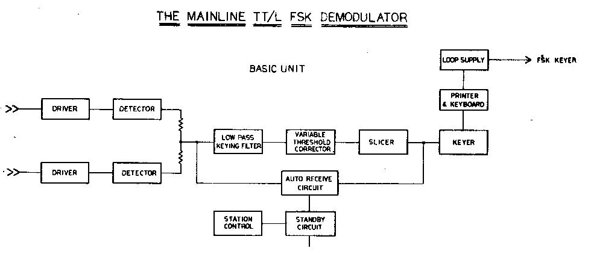
If the basic FM with limiter section is added, the total unit is then called the TT/L version. If a limiterless input section is further added, it becomes the TT/LF. If, as a few might do, a heterodyne unit is added allowing variable shift with narrow filters, this is called the TT/LH.
At K8DKC, all three sections have been added (TT/LFH). The limiter section can be operated limiter-less; giving three two-tone input configurations possible from broadband to 70-eps Collins filters.
At W8SDZ, the basic TT/L is in use, and has been giving such excellent results (both on FM and with the limiter switched out for broad-band limiter-less operation) that no plans at present call for additional input sections to be added.
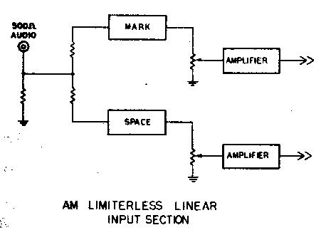
Since completing this project, tests have been run at K8DKC on these various input units, utilizing an audio tape recorder. In general, it can be said that with the exception of nearby CW QRM when the 70 cps filters showed definite advantages, the limiter-less so far has offered little advantage over the FM system. On the contrary, the FM system has quite often displayed better copy than the limiter-less. This includes talking with weak European stations; static conditions; and in general, any conditions so far encountered. The FM section was being used with a receiver having a 2.1 filter and no band-pass input filter. The would place the FM section at its greatest disadvantage when one further considers that tones of 1275/2125 were being used on a linear discriminator.
Results so far indicate that if it were not for testing and occasional CW interference, the alternate limiter-less systems would be seldom used. Further experimentation is planned.
We would therefore suggest that the basic unit with FM section be built and tried. (The FM section converts immediately to two-tone with operation of the limiter bypass switch.) This method allows quick and inexpensive adaptation to any type of input desired. It also allows an auxiliary FM unit to be constructed for any alternate shift desired; or interchangeable plug-in discriminator filters could be used.
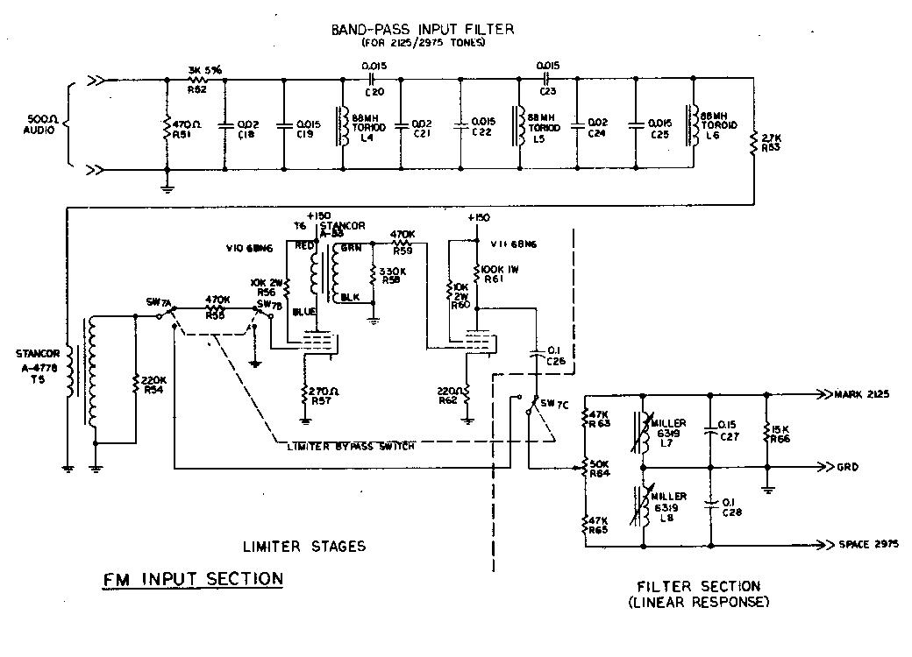
The Band-Pass Input Filter
This was designed by Vic Poor, K3NIO, specifically for this
demodulator. It is a 3-pole Butterworth type of slightly over 1
kc. In width. It uses 88-mh. toroids, and proper capacitance
values are made by paralleling several of the common values.
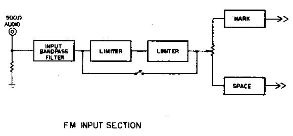
The Limiter
This is a 2-stage transformer-coupled system of zero-time
constant characteristics for maximum protection against noise
bursts, impulse noises, etc. It has about 50,000 times gain and
limits down to -56 dB. input. Normal input is 2-5 volts RMS at
500 ohms for optimum operation. It utilizes cascaded 6BN6 tubes
which clip impulse noises instantaneously and symmetrically.
The 6BN6 is said to produce far better noise immunity than any other FM limiter. One 6BN6 stage is said to be the equivalent of two normal limiter stages.
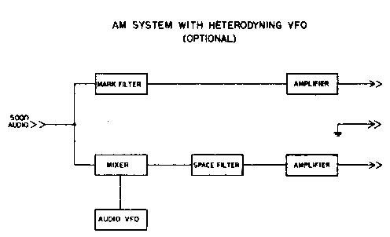
One does not want to use RC coupling between stages of a good limiter, as this inserts an undesired time constant. A switch has been provided to by-pass the limiter for two-tone broad-filter operation.
The Filter Section
TV width coils were used as they inherently have low
"Q", and make an ideal linear discriminator. Toroids
can be used (Sections 6 and 8) but must be properly loaded. Both
the 2125/2975 and the 1275/2125 filter sections were designed
using a Racal digital audio counter, AC VTVM and audio generator.
For a number of reasons, the 2125/2975 filter section is superior to the 1275/2125 and thus only the one band-pass input filter was designed.
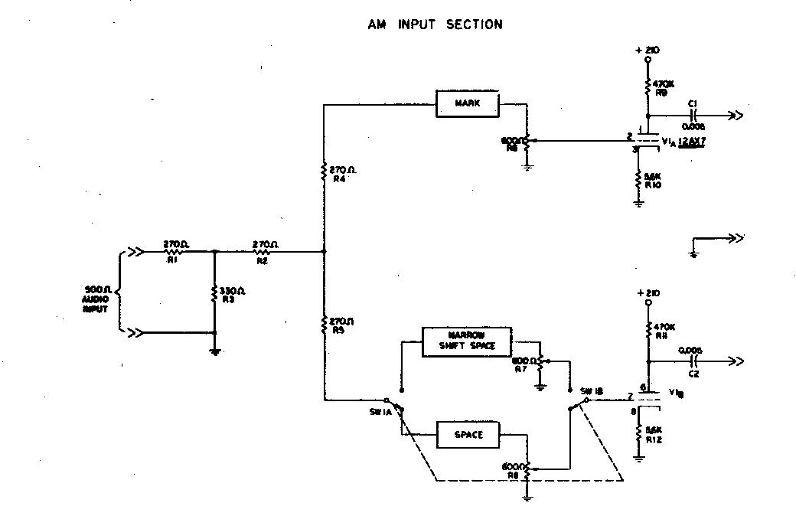
The Detector Section
This is a dual-detector with parallel combining. The extra
detector section is used for:
The Low-Pass Filter
This is our real "pride and joy" on this demodulator.
It represents something of a milestone in amateur units. Other
low-pass filters have been used, but little work has been done
with LC filters. DL3IR offered a LC low-pass filter, but the
application was different and the cut-off frequency was much too
high to he adequately effective.
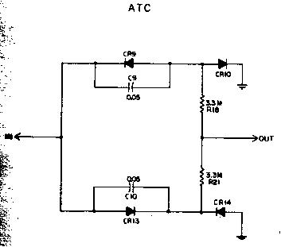
This is a 3-pole Butterworth design and is isolated from the detector stage and from the variable threshold stage through cathode follower stages to keep constant impedance on the low-pass filter.
It was designed with the assistance of Dr. McMann of the University of Michigan and Dr. Joe Buck of Cal Tech in California. It was observed under actual conditions for correct "eye pattern" by K3NIO at the Frederick Electronics laboratory. It is an optimum design and it is suggested that no substitutions of any sort be made UNLESS quite narrow channel filters are used. In this case, the 22K resistor R14 could be made larger (33-39K) to keep the total rise time of the channel filters and the low-pass filter within one hit-time.
This filter has a cut-off of 28 cycles.
The DTC/ATC Section
This is the variable threshold corrector circuit. A switch is
provided for changing from DTC (open switch) to (ATC) closed
switch). Normally DTC would he used, but for copying
keyboard-speed mark-only, ATC will give best results.
This section is followed by a cathode follower section to keep the output of the DTC at very high impedance from mark to space; which would not be the case if fed directly into the slicer stage.
The time constants in the DTC/ATC have been quite carefully selected by exhaustive testing and should not be varied.
We recommend you make no attempt to improve this section, as shortening the time constants must be done symmetrically on the storage system as well as the disconnect system. This results in increased single channel distortion. Lengthening the time constants results in less ability to follow the faster fade rates.
The Slicer
This is a trigger tube which changes output state on a very tiny
input fluctuation- it will trip on about 30 millivolts. Since the
input voltage will be about 50-55 volts with normal maximum
input, this represents a post-detector dynamic range in excess of
60 dB. This is of course exceptional, but needed for optimum
limiter-less operation in which the signal can easily vary more
than 40 dB at the output of the receiver even with AGC in use.
This circuit has regulated voltage applied to it as to all
critical circuits to keep the slicing point constant for optimum
operation. A single "set-and-forget" control on the
slicer makes it a highly reliable, stable circuit.
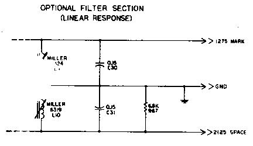
The "OR" Gates
These provide a method of controlling the keyer tube either for
standby or for auto-receive, and are regular computer-type gates.
The Keyer Tube
This is the well-known 6W6 circuit that has been in use for some
time. We strongly recommend the use of 60 ma. circuits with the
printer magnets in parallel. This provides one-fourth the
inductive load offered by series connection, and the printer can
close its magnets more quickly. The back EMF (inductive kick)
will be only 50 per cent as great, putting less strain on the
system. With a 60 ma. circuit, a greater number of machines can
be placed in series for simultaneous copy.
Polar Relays
The use of polar relays is not recommended either for the printer
or for use with the FSK system for the transmitter.
Mercury-Wetted Relays
These offer significant advantages over polar relays, but their
use is also discouraged.
The FSK System
This is the regular MAINLINE FSK system. It utilizes the
"saturated diode" concept for fixed shift. Once the
trimmer capacitors have been adjusted for the shift desired, the
keyer will retain that shift indefinitely. Two tiny keyers are
suggested for most transmitters-one for normal shift and the
other either for narrow shift or for use on those transmitters
requiring inverted transmission on some bands, such as the HT-32
series by Hallicrafters, etc. If the shift is backwards from
normal, reverse the direction of the diode. A similar system has
been previously described in greater detail by K8DKC.
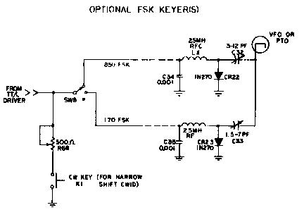
The FSK system suggested also includes variable narrow shift CW ID.
The main power switch disconnects the FSK connection to avoid the possibility of hum loops to the transmitter for voice operation when the TT/L Demodulator is not operating.
The Indicator System
There are many different types of indicating systems. The most
common is the "+" display which is connected to the
mark and space filters. There is the "flipping line"
display in which a DC-coupled scope such as the
"Oscilloanalyzer"2' is connected to the
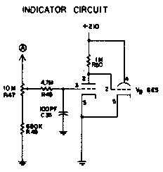
output of either the low-pass filter or detector circuit. Such a display is offered on many military converters. There are neon bulbs as in the W2PAT circuit and dual-eye indicator tubes as in some versions of the Altronics-Howard commercial units.Other types of indicators are generally unfamiliar to amateurs. Some of these include displays for commercial "Twinplex" signals, etc.
When using a linear discriminator, one seldom gets straight lines for the usual "±" scope display. Weitbrecht showed typical displays in his Mark IV converter article. However, as soon as one leaves 850 shift very far, the ellipses become so distorted that one has little idea what mark and space should then resemble. It erroneously gives one the impression the unit will not work on those shifts.
Some converters use extra tuned circuit just for the scope presentation. These give sharp, straight lines, but as one goes toward narrow shift those displays all but disappear; again giving an erroneous implication that the converter is marginal on a narrow shift.
With a good linear discriminator and lots of post-detector dynamic range, very narrow shifts could be rather easily copied if the indicator system was adequate.
This called for a new approach to the indicator problem. A system was developed what we call the "minus-minus" system. Since mark and space are never present at the same time they can be alternately displayed on the SAME display-thus our system is realy direct-reading voltage comparison system. A meter could he used, and in fact, will he in a transistorized version using a similar concept.
While receiving RTTY signals, if mark and space are equal at the detector stage, no variation on the indicator is noticed. If they are unequal due to various reasons such as mistuning, this display will show a variation. By careful selection of an eye tube with (1) lots of gain, and (2) short-perseverance phosphor, quite accurate tuning can be readily accomplished. The closer one gets to correct tuning, the less the eye flickers. Thus the action is rather logarithmic. There is enough gain in the circuit that the indicator gives excellent results on quite narrow shifts by merely opening the gain pot accordingly. As this system is linear, shifts from less than 170 to 850 cps can be accurately read directly off the dial; once calibrated.
A simple RC low-pass filter is included at the grid of the indicator tube to keep the rectified audio output of the detector from affecting the indicator's presentation.
Most "straddle-tune" indicators require reception of RTTY for accurately tuning in the signal. "Send me a line of RYRYRYRY's" is a typical statement when switching to narrow shift. This indicator can be used to immediately tune a station suspected of being on narrow shift with nothing but his mark carrier! Set the knob to correspond with 170 shift; tune the signal for normal eye closure and wait for his FSK signal to commence. A minor adjustment can then he made, hut the tolerance of the system allows immediate copy.
Although oscilloscopes have been considered a "must" item in the past, this simple and inexpensive system actually gives superior results to most scope circuits; particularly when used for narrow shift.
The Auto-Receive Circuit
One of the most enjoyable aspects of RTTY is the ability to have
the machine work satisfactorily whether it is watched constantly
or not. On the other hand, one of the most exasperating features
is the need to be present when the station finishes; particularly
if one is just "copying along" and not in the contact.
As a result, one of the major design objectives of this unit was to develop a reliable automatic-receive system that would activate the printer if a signal was being received and would place the printer in "mark-hold" when the station quit sending. Most (if not all) such systems use a relay and sample the mark voltage through a long time constant. Since mark alternates with space under actual reception, this time constant must be made long enough to protect for fading signals; certain character combinations such as "blank" keys, etc.
Limiter-less operation seemingly would prohibit the use of such a system unless the time constants were exceptionally long.
By utilizing our "minus-minus system, it becomes a "carrier recognition method, it operates equally well on limiter-less or FM, although the sensitivity must be changed.
The "minus-minus" information is fed into a "squelch" tube, which in turn operates through one of the "or" gates to control the printer.
While true that any station near the mark or space channels will operate this unit, the sensitivity of the system can be adjusted somewhat to compensate. It is not, after all, a complicated autostart that can reject CW in favor of RTTY, but for this purpose it works most satisfactorily.
This is one of the greatest convenience features on the TT/L demodulator and involves no relays. The triggering action is such that only a 3 volt variation or less will change the state of the squelch tube. Since normal 850 shift provides about -55 to -60 volts at this point, this is indeed a very small variation and gives the system unusual flexibility when compared with other forms of mark-hold.
It might be mentioned that the operation of the auto-receive would not be satisfactory on narrow shift with the 850 cps discriminator-however, a simple add-on FM section with narrow shift discriminator would then give excellent auto-receive results.
The Power Supply
A heavy-duty 90 ma. transformer is used since there are more
tubes than normal in this circuit. Both the negative and positive
supplies are identical, and both are well filtered and regulated.
This contributes greatly to the stability of a high performance
unit. The loop supply is independent and provides the unique
plus-and-minus voltage to key the FSK system.
The Add-On Units
The possible filters that might be obtained or constructed vary
so widely in type that we have suggested a possible circuit for
moderately broad filters intended for use as a limiter-less
two-tone input section. A block diagram is included for a typical
heterodyne mixing system in which very narrow filters can be used
to copy a great variety of shifts. These diagrams possibly will
give the reader ideas about other units which he might wish to
add. These "add-on" units can be constructed externally
for a few dollars each and hooked to the basic unit.
Tune-Up
With no signal input and the input grounded to keep the limiters
quiet, put a voltmeter to the input of the DTC/ATC (or to the
cathode of V2b. This voltmeter can be an ordinary inexpensive
type as this is a low-impedance point not requiring a VTVM.
Adjust R11 (cathode of V2b for zero volts with respect to ground.
Now with the standby switch in the "operate" position and with the auto-receive switch in the "off" position, rotate R27 (cathode of the slicer tube V4 until the printer runs open; then back it off until the printer stops. Do this several times slowly and find the middle of these two conditions, set it there and let it alone. It should not stay at that setting. This of course could be checked from time-to-time, but should stay in adjustment, particularly if a high-quality, 2-watt molded carbon pot is used.
If a limiter-less unit has been added, the maximum voltage applied to the input of the DTC/ATC should not exceed about ± 60 volts DC with normal input. The receiver can be advanced until this situation exists, and the indicator system set accordingly. The FM system will probably give a little less voltage, as it is a "fixed gain" system.
The hardest part about constructing this, or any other home-made unit, is tuning the filters to proper mark and space frequencies. The easiest way to use an audio frequency counter, but it is not likely very many can do this! Willard Shears, W8HYE, has suggested that he will be willing to sell special audio tuning forks for this purpose at $10 a set. Sets are available for 2125/2975 or for 1275/2125. This is a very good way to accomplish the job.
After mark and space have been correctly tuned, adjust the filter balance control, R64 to give equal voltage swing for mark and space at the same point as was measured before-that is, the input to the DTC/ATC.
Now adjust the indicator balance control, R9 to give equal closure of the eye tube for rapid reversals on mark and space. This is a simple adjustment and assures the eye tube faithfully following the detector output voltage.
None of these adjustments should need further attention for extended periods of time.
This completes the adjustments. The auto-receive pot is set so the printer will not run wild on noise. This might vary somewhat from day-to-day and from band-to-band. The indicator control will not need changing unless the shift being received is other than 850 cps.
Placement of Parts
The auto-receive and indicator pots should be placed on the front
panel. All other pots can go on the rear panel as they are
set-and-forget controls. They need no knobs or dials.
The switches would all go on the front panel. Several others not shown might come to mind, such as a selector switch for mark-only or space-only for the auxiliary add-on units, etc. Several of the switches easily could be combined on one rotary switch, also.
You might like to put the two neon lights connected with the auto-receive circuit on the front panel as well. These are N2 and N3. N2 indicates when the unit is in standby condition and could be a red neon. N3 lights when the unit is in a receiving condition. They make excellent indicator control lights.
Narrow Shift Copy
Optimum signal-to-noise ratio on this converter is achieved only
on 850 shift. If considerable work on narrow shift is desired,
another discriminator could easily be constructed using higher
"Q" filters. However, this unit will copy extremely
narrow shifts, even so, shifts as low as 4 cps have been
successfully copied on this unit. Such shifts have no practical
value to amateurs, but the example is included to show the
tremendous flexibility of the TT/L. Shifts less than this could
have been easily handled by the demodulator xvere it not for
drift in the transmitting equipment. An auxiliary DC scope was
used for tuning purposes, although the integral tuning indicator
worked quite well to less than 27 cps shift.
Tuning and Drift Latitude
Due to the tremendous dynamic range of the TT/L demodulator,
shifts can be accurately copied that have drifted to nearly 50
per cent of their shift-that is at least 400 cycles on a normal
850 cycle shift. The auto-receive would probably lock up the
printer by that time, however. Excellent results can be obtained
from round-table, discussions, etc., while the operator is
absent. In this respect, we feel this unit offers far better
results from off-tuned stations while in "auto"
position than any other type in use.
Distortion
With a minimum band width post-detector low-pass filter followed
by a threshold corrector, there is certain to be some distortion
introduced. The system would not be working to optimum if there
were no distortion. However this distortion is low enough (10 -
12 per cent) that the printer is not affected at normal settings
and is not noticed except when making the distortion check. A
no-distortion system would indicate time constants too long in
the DTC; and a low-pass filter that was inadequate.
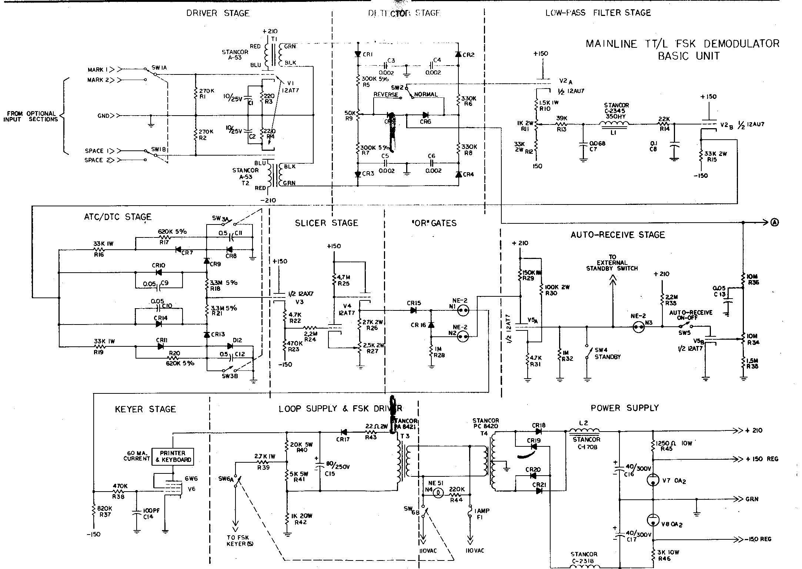
Summary of Features
It should be noted that only half of V3 was used. The other half will be available for any purpose desired, such as operating a relay to control the printer motor, etc.
Obtaining Parts
All parts, except the three 88-mh. toroids for the input filter
of the FM section, are standard stock items of any major
distributor. No critical, hard-to-get or discontinued items were
used. All parts were purchased new and no junk-box compromises
were included.
The diodes should all have extremely high reverse resistance except the ones used in the power supply, which are not critical. In the power supply we recommend the Sarkes-Tarzian F-8 type or equivalent 800 PIV diodes. In the loop supply D17 should be an F-fl or F-8. Elsewhere the F-4 is recommended, although many other types are suitable. Be certain they have a minimum of 200 megohms reverse resistance. The 1N2070 are suitable.
The capacitors should be Mylar types except those in the power supply (C14, C15, and C16). Several good types are available- one suggestion is the Sprague "Orange Drop" Mylar types. In any event, they should have ± 10 per cent, or better, ratings.
Total cost for the parts should run under $107, including chassis and indicator.
Summary
After extensive experimentation and testing on various optimum
units, both FM and limiter-less, we feel that the FM system, when
well designed, offers great potential for further development. It
is not the complete answer, however, and for optimum results
should be aided with an auxiliary limiter-less two-tone input
section featuring narrow filters. This combination should then
handle all types of incoming signals as well as can be done with
the present state of the art. It is assumed the FM section also
could be operated as a limiter-less two-tone system by bypassing
the limiter.
Many tests can be made with this type of "add-on" unit, and it is hoped these comments and circuits will spur others to explore more fully the relative merits of these and other systems.
A transistorized demodulator with many similar features is on the way; and we have seen it in operation. It will cost substantially less to build and yet offer similar performance; having a total of 22 transistors. Present plans call for a printed-circuit board to be offered for simplicity of construction. It will appear in "QST" next summer.
It has taken a great deal of personal time and financial investment to develop this demodulator. We feel that the interest already expressed has made the project worthwhile. We hope we have outlined the criteria for a good demodulator based on the best knowledge currently available to the authors. There has been no compromise with performance. Although the circuit offered is somewhat more complex than amateurs have used in the past, all controls are essentially "set and forget" type. The results, when compared with other units available for testing, both commercial and advanced amateur types, have been outstanding. The nearest equivalent commercial unit embodying comparable performance costs $1500 and higher.
Acknowledgements
Our thanks go to all who have held continued interest in this
project. To K6IBE for getting us into this development work and
for his continued interest via telephone calls and personal
visits when K8DKC was able to get to Huntsville occasionally; to
W5HCS for stimulating suggestions; to W4MGT for forcing us to
learn exactly what we were talking about; to KODOM and W8UJB who
"couldn't wait" to get started building similar units;
to K8ERV for work on filters and other assistance; to W1FGL for
sending us information on the Altronics-Howard Model
"L" and other circuits; to Dick Hilferty of
Press-Wireless for comments; to W6OWP for obtaining the
Press-Wireless patent number that cleared up so many points of
interest; and to all the others who have held interest in this
work.
Particular attention is called to the many, many hours that K3NIO has devoted to assisting and guiding us in this work. Without his intelligent analysis of our data and consistent demand that we settle for nothing less than optimum, this project would have turned out much differently. He also ran a complete test of the demodulator in the Frederick Electronics laboratory to assure the desired goals were being met.